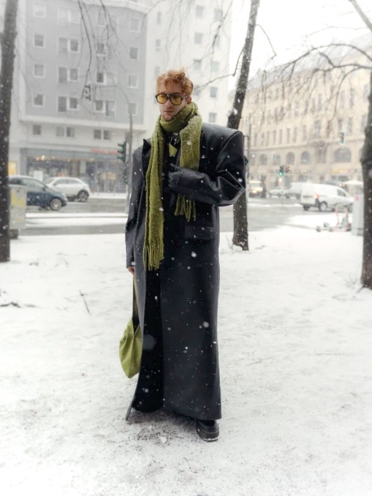
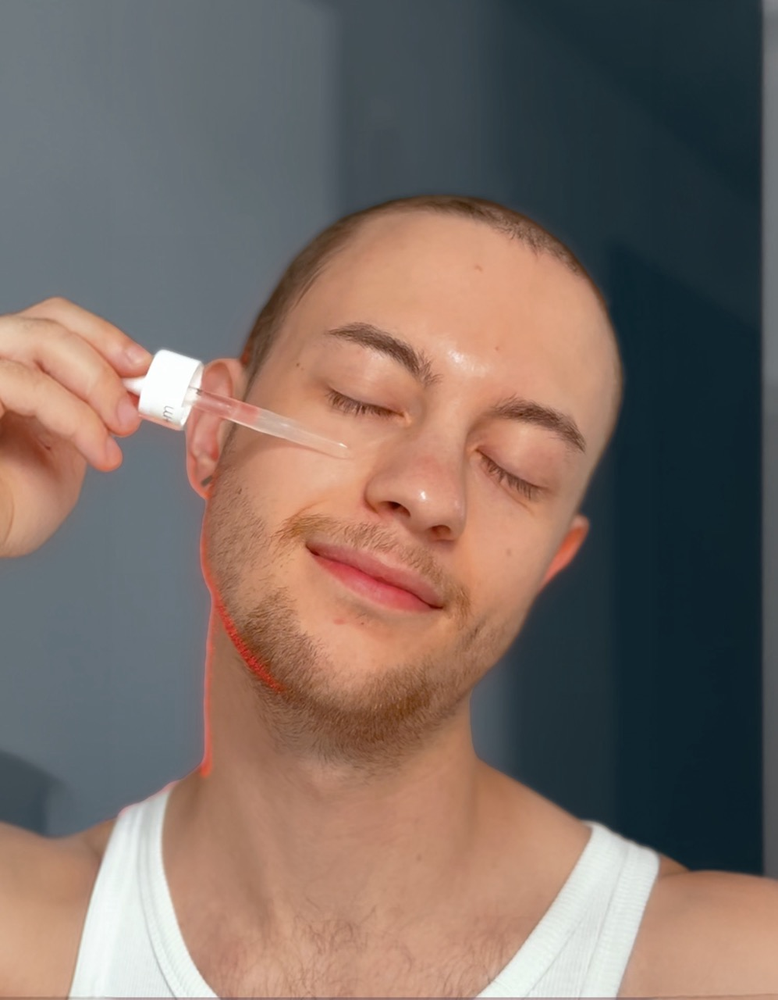
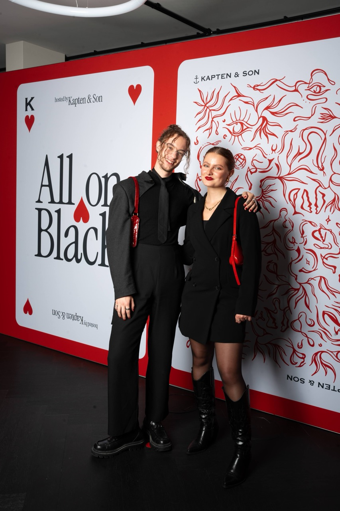
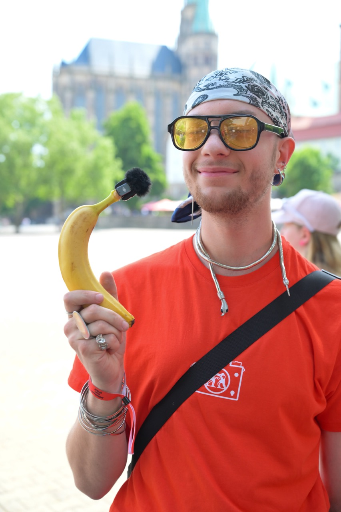
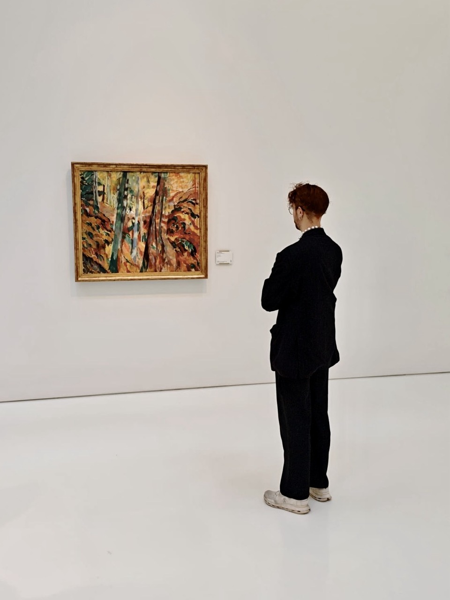
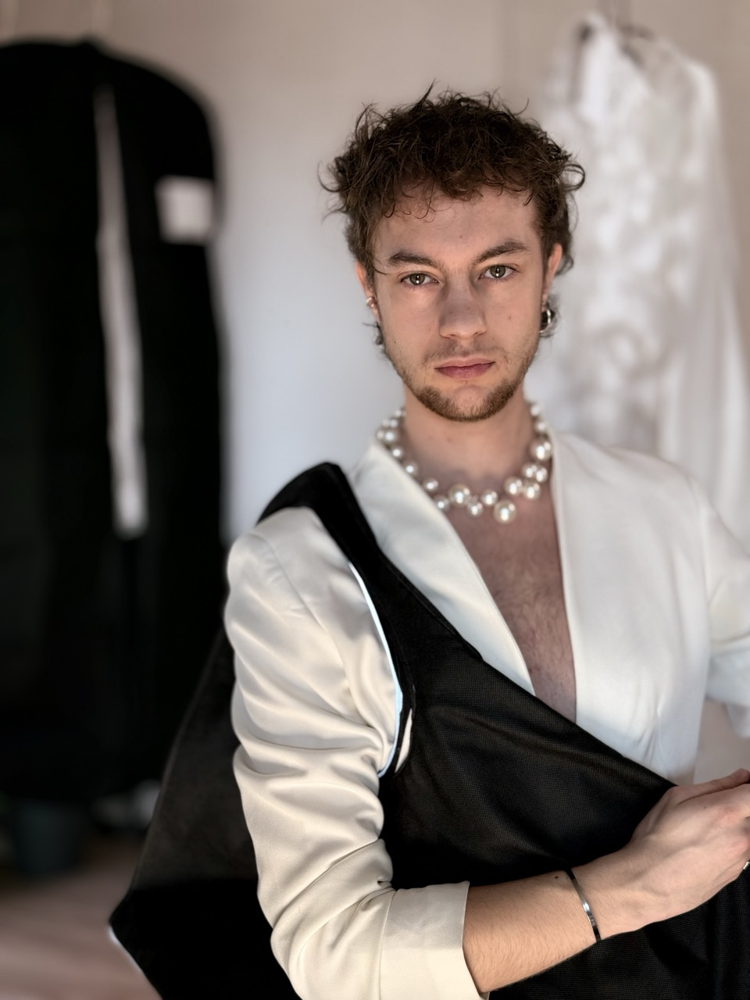
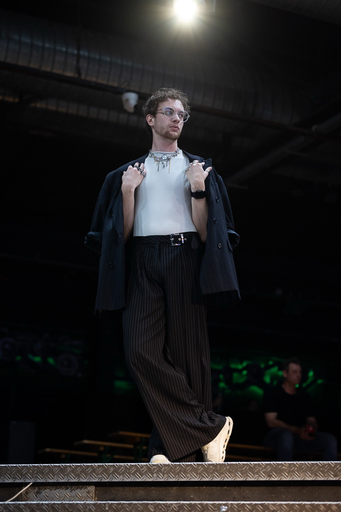
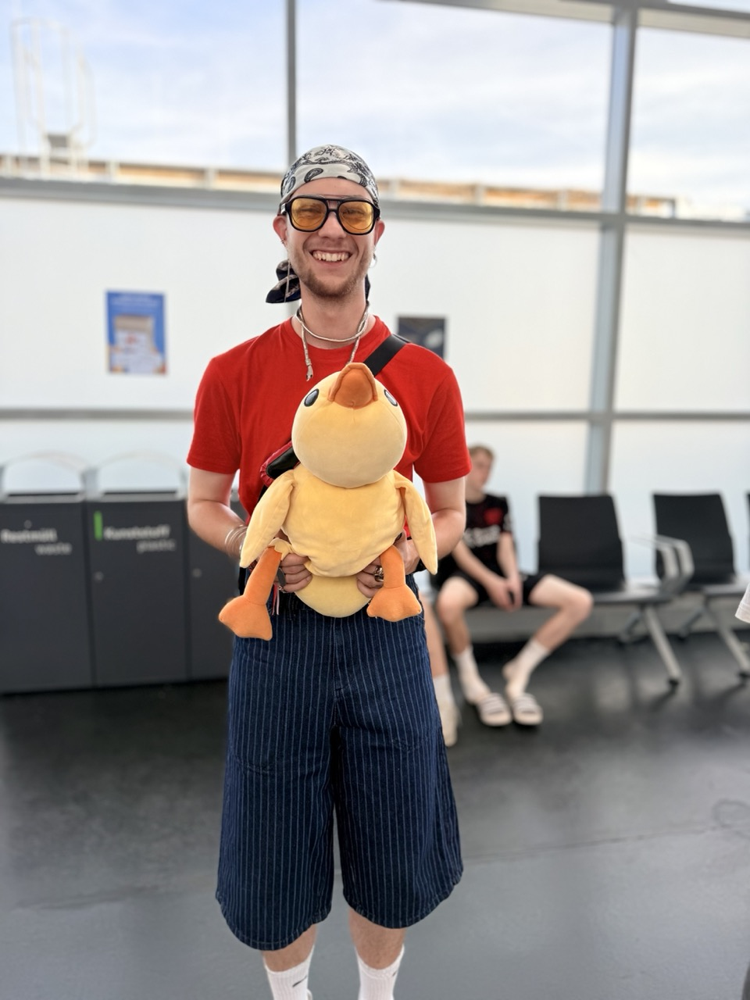
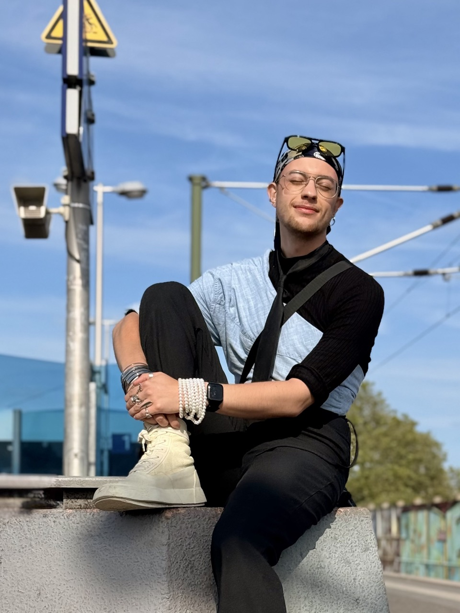
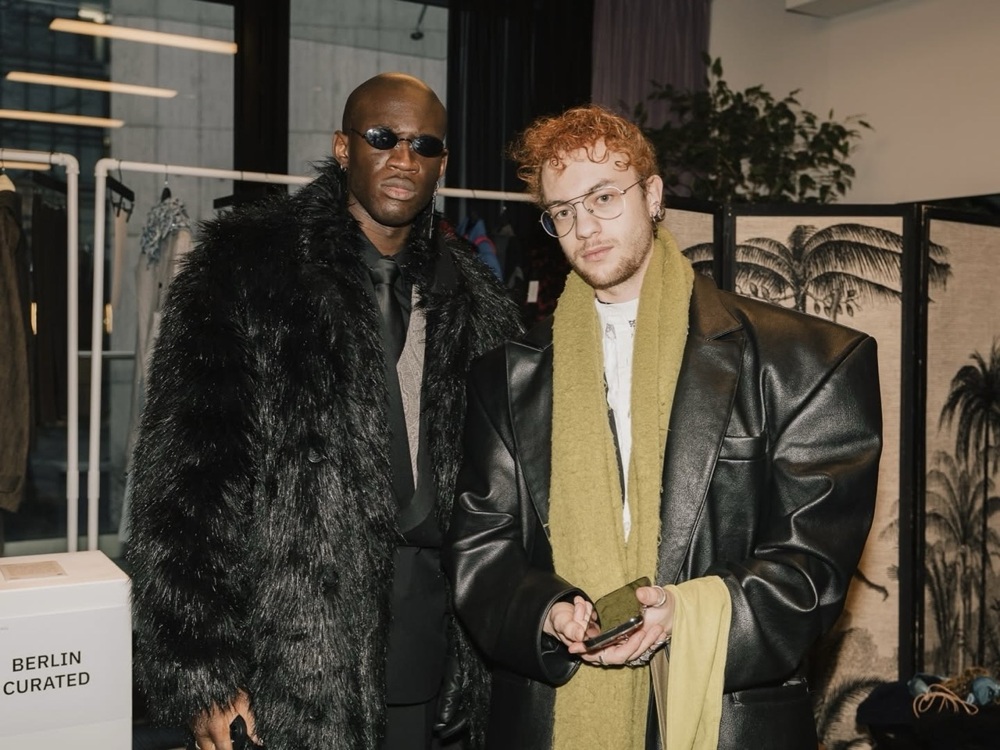

Authentisch
schlägt poliert.
Ein Spot, der wie ein Spot aussieht, hat schon verloren. Ich suche das Echte — ungeschliffene Energie ist das, was stoppt.
Ich bin David — ich produziere UGC nicht, weil ich gerne vor der Kamera stehe (das auch), sondern weil ich verstehe, was ein Spot leisten muss, damit jemand stehen bleibt, schaut und konvertiert.
Diese drei Sätze leiten alles, was ich für Marken produziere.
Ein Spot, der wie ein Spot aussieht, hat schon verloren. Ich suche das Echte — ungeschliffene Energie ist das, was stoppt.
Wenn die ersten 1,5 Sekunden nicht stimmen, ist alles danach egal. Ich teste mehrere Hooks pro Skript — bevor das Material euch erreicht.
Content ohne Strategie ist Lärm. Ich denke in Retention-Kurven, CTAs und Plattformlogik — und baue Spots, die nicht nur gut aussehen, sondern konvertieren.
Das, was aus meinem Lebenslauf relevant ist — und warum.
Alles zusammengebracht — Performance-Wissen, visuelles Gespür und Kamerakompetenz — und in echten UGC-Content umgewandelt, der für Conversion gebaut ist.
Produktmanagement für eine der größten deutschen Lebensmittelketten. Ich erlebe täglich, wie echte Marken intern denken, entscheiden und kommunizieren — direkte Perspektive auf das, was Marken wirklich brauchen.
Selbstständig tätig für Kunden aus Mode, Beauty, Healthcare und Tech — von UGC-Content und Social-Media-Creatives über Website-Design bis hin zu Branding und visueller Kommunikation. Alles aus einer Hand, alles auf Conversion ausgerichtet.
Eine Fashionshow mit 450 Gästen, €10.000 Budget und einem 68-köpfigen Team produziert — inklusive RTL TV-Beitrag. Vollständige P&L-Verantwortung, Casting, Location, Show-Regie. Geliefert, on budget, on time.
In einer Design-Agentur visuelles Denken geschärft: Was sieht professionell aus — und was nicht. Was zieht Blicke an, was nicht. Die ästhetische Basis, auf der heute meine Videos stehen.
Mediendesign trifft Markenmanagement. Bachelorarbeit über die Verbindung von physischer Mode und digitalen Medien — mit Auszeichnung abgeschlossen (Abschlussnote 1,5, Bachelorarbeit 1,0). Das theoretische Fundament für das, was ich praktisch mache.










Ich bin kein Spezialist, der eine einzige Nische kennt. Die Vogue hat mich auf ihrem Instagram gepostet. Ich bin leidenschaftlicher Pfadfinder. Ich habe eigene Apps entwickelt und veröffentlicht. Ich habe eine Fashionshow im Bootshaus — einem der bekanntesten Clubs in Deutschland — von Grund auf produziert: Casting, Location, Bühnenbild, alles. Ich war beim Balenciaga-Event dabei, weil ich ein Shooting und einen Videodrehtag für eine Freundin organisiert habe, die dort gewonnen hatte. Mode, Tech, Reisen, Design, Filmproduktion, Marketing — alles echt, alles gelebt.
Genau das macht den Unterschied im Bild: Ich bringe echte Erfahrungen mit — und die sieht man.
Fashion · Beauty · Healthcare · Tech · Design · Travel · Film · Branding · Events · Apps · & mehr
Brief, lose Idee oder konkrete Deadline — schreibt mir. Ich antworte innerhalb von 24h.